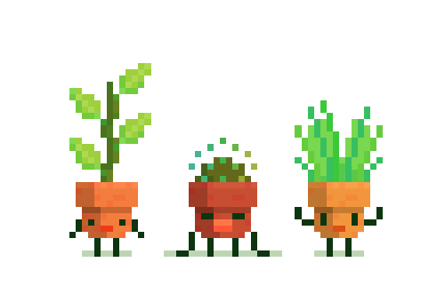

Types of Eating Disorders
- Anorexia Nervosa - Extreme anxiety about putting on weight or getting obese that results in starvation.
- Binge Eating Disorder - Eating excessive amounts of food quickly, frequently accompanied by emotions of helplessness and humiliation.
- Bulimia Nervosa - A pattern of binge-eating and purging, including self-induced vomiting.
- Pica - Recurring instances of eating non-food items like paper, pencils, metal coins, or pebbles.
- Rumination Disorder - Bringing food back up after being swallowed repeatedly in order to chew and re-swallow it.
